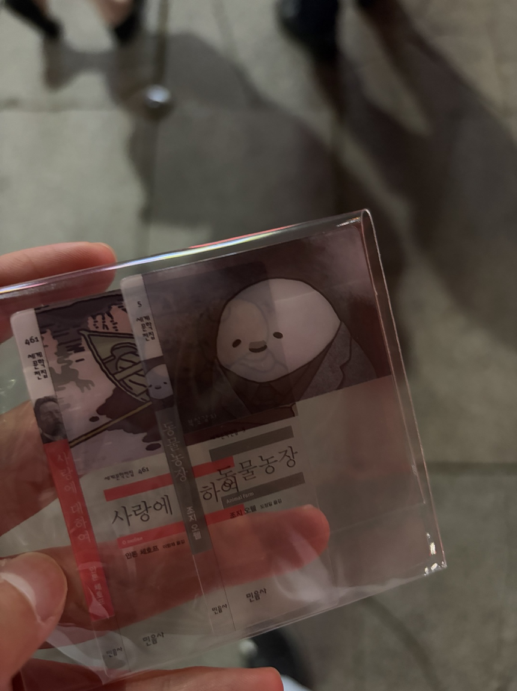

⚡ 해리포터 시리즈 정주행 중
영화 《해리 포터》 시리즈를 순서대로 다시 감상하고 있습니다.
비즈니스 IT를 전공하고 미디어를 부전공하며, 책과 영화 그리고 음악을 좋아합니다. 저의 소식과 취향을 한눈에 볼 수 있도록 정리한 홈페이지입니다.
영화 《해리 포터》 시리즈를 순서대로 다시 감상하고 있습니다.
나의 소식, 취향, 활동 기록을 한눈에 볼 수 있도록 계속 업데이트하는 공간입니다.

최근에 민음사 책갈피를 구매했습니다. 그중에서도 동물농장 디자인이 특히 마음에 들어서 함께 기록해 두었습니다.
새로운 독서 기록이나 취향 기록이 생기면 이 공간에 계속 추가할 예정입니다.
책을 읽고 새로운 이야기와 생각을 만나는 시간을 좋아합니다.
일상 속에서 꾸준히 즐기는 대표 취미입니다.
다양한 장르의 영화를 감상합니다. 요즘은 해리 포터 시리즈를 보고 있습니다.
제가 좋아하는 아티스트입니다. 몽환적인 분위기와 멤버들의 음색이 매력적이라고 생각합니다.

제가 인생영화로 꼽는 작품은 《마더》입니다. 봉준호 감독 특유의 분위기와 서사가 강하게 기억에 남는 영화입니다.
감정선과 긴장감이 강하게 남아, 시간이 지나도 다시 떠올리게 되는 작품입니다.
목동에서 추천하는 식당입니다.
📍 지도에서 보기 ↗인천 부평구에서 추천하는 빵집입니다.
📍 지도에서 보기 ↗체크박스는 진행 현황 표시용입니다. 다음 Sprint에서 index.html과 assets를 함께 수정해 계속 발전시킬 수 있습니다.